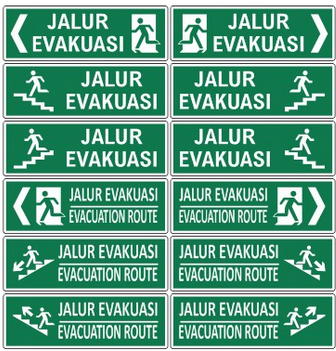

Makna Rambu Evakuasi
Rambu evakuasi digunakan untuk memberikan petunjuk kepada orang-orang di tempat tersebut tentang rute evakuasi dan lokasi titik kumpul dalam situasi darurat.
Rambu evakuasi gempa bumi di luar ruangan dirancang untuk memberikan petunjuk kepada orang-orang mengenai rute evakuasi yang aman dan tempat berkumpul setelah terjadi gempa. Meskipun rambu-rambu tersebut dapat bervariasi bergantung pada peraturan setempat, berikut adalah beberapa rambu umum yang biasanya digunakan:
| Jenis Rambu | Deskripsi |
|---|---|
| Rambu Panah Evakuasi | Panah yang menunjukkan arah evakuasi yang harus diikuti. |
| Rambu Pintu Keluar | Menandakan lokasi pintu keluar terdekat yang harus digunakan selama evakuasi. |
| Rambu Keluar Darurat | Menyatakan pintu atau jalur keluar yang digunakan khusus untuk keadaan darurat. |
| Rambu Kumpul Evakuasi | Menunjukkan tempat yang ditetapkan untuk berkumpul setelah evakuasi. |
| Rambu Pertolongan Pertama | Menandai lokasi peralatan pertolongan pertama atau tempat berkumpul sementara. |
| Rambu Tangga Darurat | Menunjukkan lokasi tangga darurat yang dapat digunakan jika lift tidak berfungsi. |
| Rambu Pengamanan | Menyatakan area yang harus dihindari atau dijauhi untuk alasan keamanan. |
| Rambu Peringatan Gempa Bumi | Menyampaikan informasi tentang lokasi dan tindakan yang harus diambil selama gempa bumi. |
| Rambu Peringatan Tsunami (jika diperlukan) | Menandakan lokasi evakuasi tinggi atau jalur evakuasi dari zona bahaya tsunami. |
| Rambu Komunikasi Darurat | Menunjukkan tempat yang ditetapkan untuk komunikasi darurat atau informasi terkait evakuasi. |